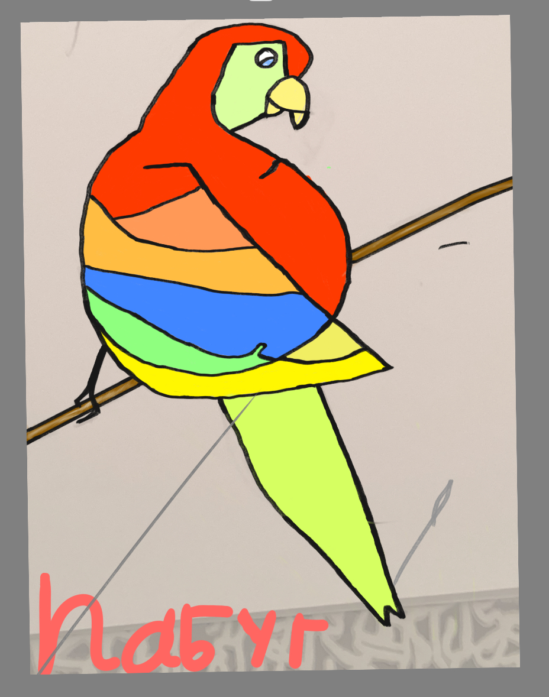
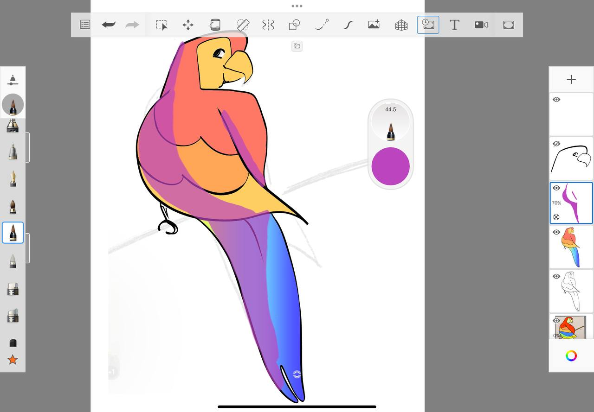

Рисуем попугая, и узнаём про режимы наложения цвета.
Давай разберем, что такое Blending Mode (режимы наложения) в рисовании на iPad. Это как волшебные кисточки, которые меняют цвета и делают твои рисунки интереснее!
Blending Mode — это специальные настройки, которые говорят программе, как смешивать цвета слоев. Например, если ты рисуешь один цвет поверх другого, Blending Mode решает, как эти цвета будут взаимодействовать: станут ярче, темнее или вообще поменяют оттенок.
Вот таблица с самыми популярными режимами:
| Режим | Что делает | Пример |
|---|---|---|
| Normal | Просто рисует цвет поверх другого, ничего не меняет. | Как краска на бумаге. |
| Multiply | Делает цвета темнее. Подходит для теней. | Как если бы ты наложил прозрачную черную пленку на рисунок. |
| Screen | Делает цвета светлее. Подходит для света или бликов. | Как если бы ты добавил свет фонариком. |
| Overlay | Смешивает цвета, делая светлые участки светлее, а темные — темнее. | Как если бы ты добавил контраст. |
| Add (Glow) | Делает цвета ярче и светлее, как будто они светятся. | Как неоновая лампа. |
| Difference | Показывает разницу между цветами, создавая необычные эффекты. | Как если бы цвета "спорили" друг с другом. |
Представь, что у тебя есть два слоя:
Если ты выберешь режим Multiply, облако станет темнее и будет выглядеть, как тень на небе. А если выберешь Screen, облако станет светлее, как будто оно светится.
Давай попробуем на практике:
Попробуй поэкспериментировать:
Blending Mode помогает создавать красивые эффекты: свет, тени, блики, свечение. Это как волшебство, которое делает твои рисунки живее и интереснее!
Попробуй, и ты увидишь, как твои рисунки станут еще круче! 😊
Рисунок попугая после наложения тени:
Ты отлично поработал. Так держать!